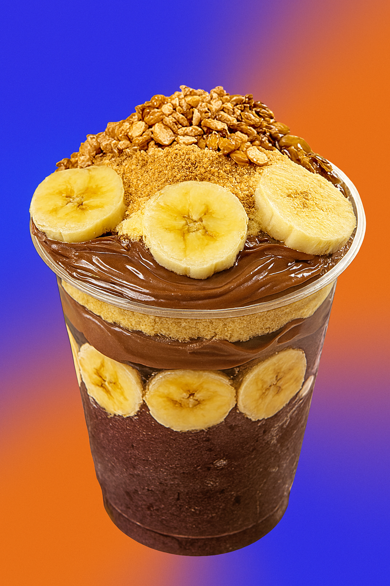
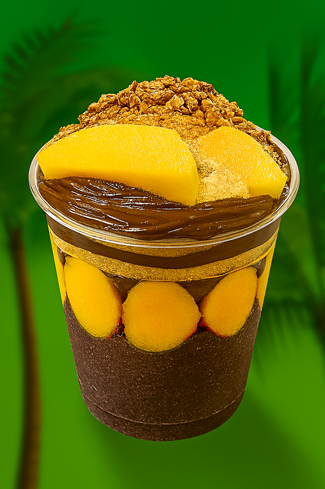
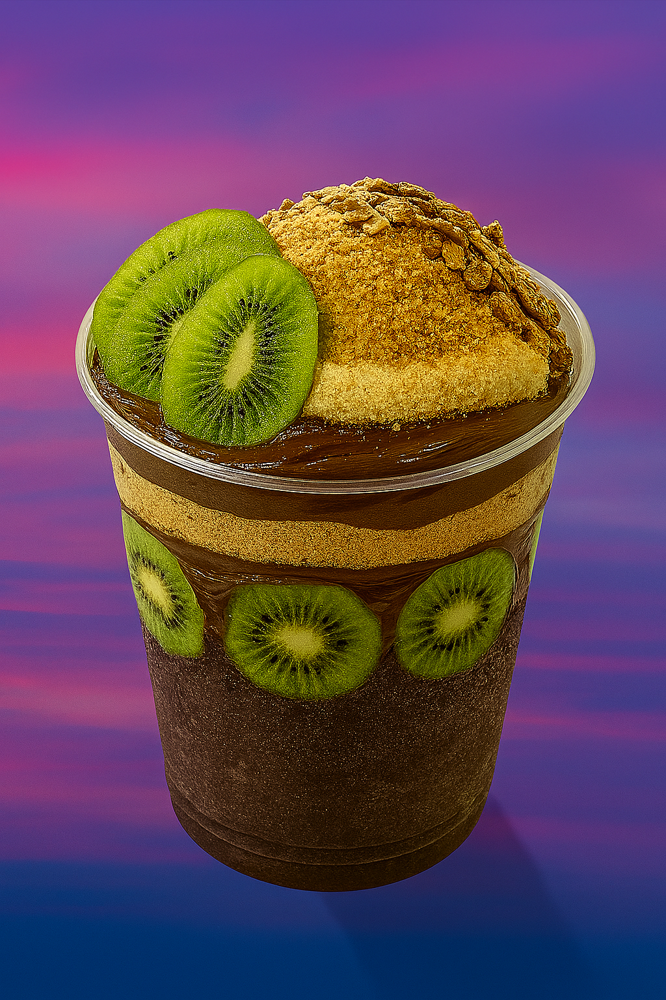
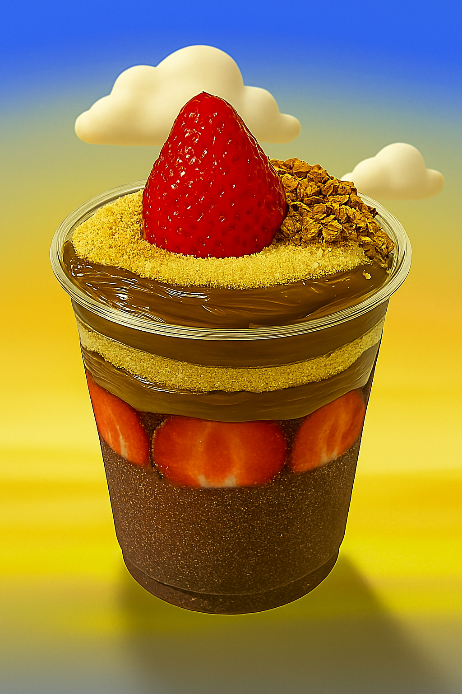
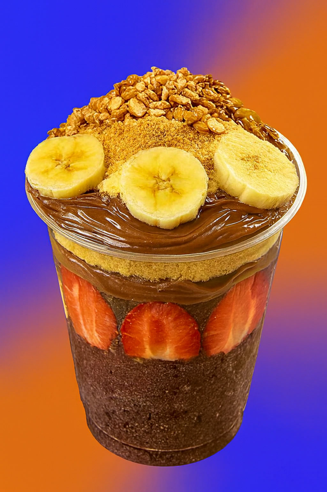
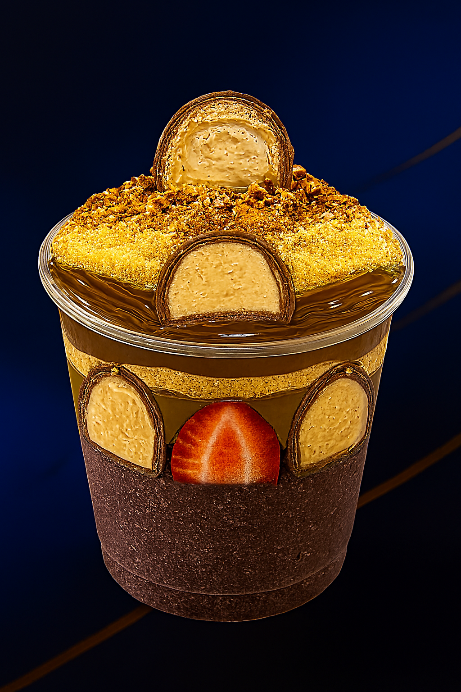
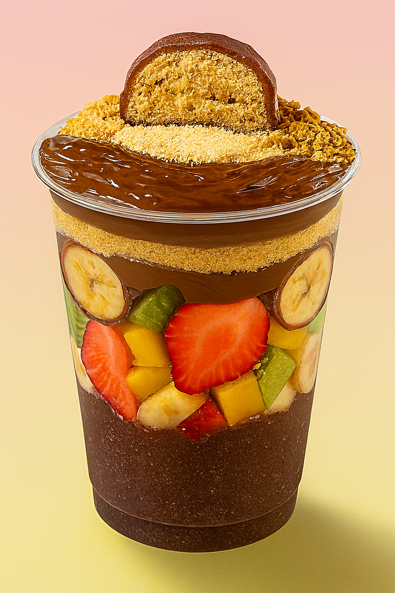
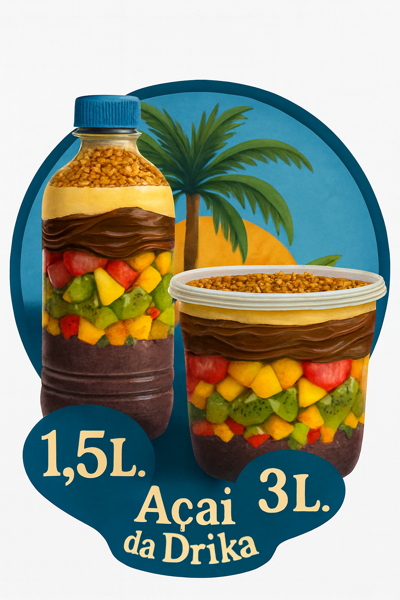

História
Adriana, mais conhecida como Drika, é daquelas pessoas que transformam o simples em especial. Aos 35 anos, ela carrega consigo uma alegria contagiante e uma paixão genuína pelo que faz. Seu amor pelo açaí não é apenas sobre sabor — é sobre memória, afeto e propósito. Desde os primeiros passos com seu carrinho artesanal até a criação do “Açaí da Drika”, cada etapa foi marcada por dedicação e fé.
O que começou como um sonho tímido se tornou uma referência local. Drika não vende apenas açaí — ela entrega cuidado, escuta, e uma experiência que acolhe. Seu jeito leve e esperançoso encanta quem chega, e seu compromisso com a qualidade e com as pessoas é o que faz tudo ter sentido. O açaí virou ponte entre histórias, encontros e sorrisos.
Foco
Mais do que empreender, Drika escolheu servir. Seu foco está em apoiar ONGs que acolhem autistas e suas famílias, casas de repousos e comunidades que cuidam dos mais vulneráveis, oferecendo parte da renda e visibilidade para causas que merecem atenção. Ela acredita que o comércio pode ser uma ferramenta de transformação — e age com coerência. Sem alarde, mas com firmeza, ela constrói pontes entre seu negócio e quem precisa de apoio.
Esse compromisso revela muito sobre seu caráter: ela não busca reconhecimento, mas sim impacto. Cada copinho de açaí vendido carrega um pouco dessa missão. E quem conhece Drika sabe — ela faz isso com o coração inteiro.
Sustentabilidade
O “Açaí da Drika” também olha para o futuro. Com apoio de empresas amigas, como o Dr. Leandro — parceiro Advogado Trabalhista — e a HopeUp 7.DEV, que fortalece a presença digital e os valores da marca, Drika vem desenvolvendo iniciativas sustentáveis que vão além do produto.
Entre as ações em andamento, destacam-se:
- ✦Uso consciente de embalagens e incentivo ao descarte correto
- ✦Parcerias com produtores locais para valorizar a cadeia do açaí
- ✦Campanhas educativas sobre alimentação e inclusão
Mas o que realmente encanta é a forma como tudo isso se conecta ao sabor. O açaí da Drika vem em variações que fazem brilhar os olhos: Morango, Banana, Nutella, Paçoca, Bombom Sonho de Valsa, Granola, Sucrilhos, Leite condensado, Leite Ninho — onde cada combinação é um convite à alegria.
E para quem busca algo mais personalizado, há a opção de reservas, garantindo um atendimento mais específico, com tempo, cuidado e exclusividade. É nessa delicadeza que Drika mostra que empreender pode ser também um ato de amor.
Experimente o verdadeiro sabor
Cada combinação é um convite à alegria. Escolha seu momento, compartilhe com quem você ama.